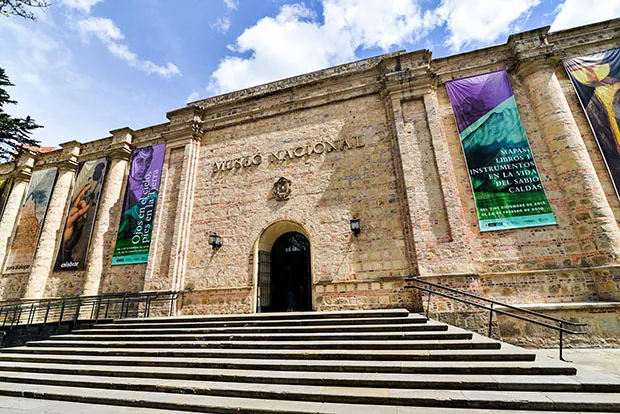

Bogotá · Colombia
Het Museo del Oro (Goudmuseum) is een van de beste musea van Zuid-Amerika en absoluut het beste museum van Colombia. De collectie omvat meer dan 55.000 gouden en andere metalen voorwerpen van de pre-Colombiaanse Muisca, Calima, Tairona en andere culturen.
Het hoogtepunt is de 'Sala de la Ofrenda' — een ronde donkere kamer gevuld met goud die draait terwijl er licht op valt. Het laat perfect zien waarom de Spaanse veroveraars dachten dat ze El Dorado hadden gevonden. Een bezoek van 2-3 uur is aan te raden.

Museo del Oro Seeing as Bogotá and nearby Laguna de Guatavita played such a large role in the Spanish El Dorado myth, it’s hardly surprising to find that the city safeguards the world’s finest gold museum. The (literally) glittering Museo del Oro contains more than 55,000 pieces of gold and other materials from all of Colombia’s major pre-Hispanic cultures. The collection is laid out in logical, thematic rooms over three floors, with explanations in Spanish and English.
Museo del Oro (Gold Museum) Stuffed to the rafters with gold, gold and more gold from pre-Hispanic Colombia – no wonder the Spanish thought it was El Dorado. Cerro de Monserrate Take the funicular or a cable car, or just climb up the stairs to this popular pilgrimage site for a fantastic bird’s-eye view over the whole city. Cementerio Central Wander this fascinating cemetery where most of Colombia’s presidents lie buried, as well as British and Irish troops who fell fighting for Bolívar. Dine out in La Macarena This bohemian inner-city neighbourhood has become Bogotá’s favourite place to eat out, full of new and innovative restaurants serving cuisine from Colombia, South America and the world. Zona Rosa nightlife The epicentre of Bogotá’s evening entertainment is chock-full of bars, clubs, cafés and restaurants, and throbs to the beat of everything from house or hip-hop to rock or salsa. View of Bogotá
• Op zondag is toegang gratis voor Colombianen — dan drukker
• Reserveer van tevoren online (goedkoper en geen wachtrij)
• De Sala de la Ofrenda is het absolute hoogtepunt — neem er de tijd voor
• Audio guide beschikbaar in het Engels en Spaans
• Combineer met Plaza de Bolívar en La Candelaria — alles op loopafstand